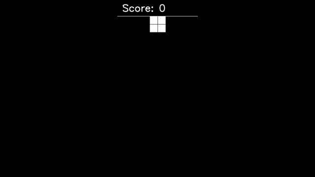
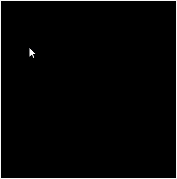

- An AI Learned to play Tetris using Value Function based Deep Reinforcement Learning
- Hand-engineered features are used to predict the quality of each possible state
- AI try to check each possible state and choose the best state that yield maximum future reward which make it possible to clear multiple lines
- 2 x 64 neurons hidden layer was used as the Deep Q Network

Project 2. Handwritten Character Recognition
- NIST and MNIST dataset were used to train the network
- Using data augmentation to produce more relevant data for the network to learn
- Modified LeNet5’s architecture and learnable pooling layers were used

Project 3. Mailfy - Email App
- Created entirely using VB .NET Winform with no additional library used
- Current implementations are using local database, it is easily interchangeable with a server

Project 4.1. Cashier & Inventory App
- Cashier Inventory App with integrated database
- Created using JavaFX 12

Project 4.2. Cashier & Inventory Web App
- Cashier Inventory App with integrated database
- Spark Java 2.9.1 was used as backend framework
- Bootstrap 4.4.1 was used as frontend framework

Project 5. Space Shooter
- Created entirely using C++ and SDL2 library
- Most sprites were handcrafted using Adobe Photoshop and some from royalty free game assets

Project 6. Sudoku Game
- Created entirely using Python and Pygame 1.9.6
- Backtracking algorithm was used to check board answer